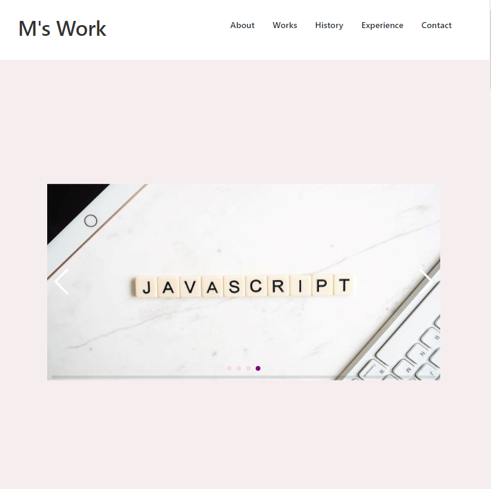
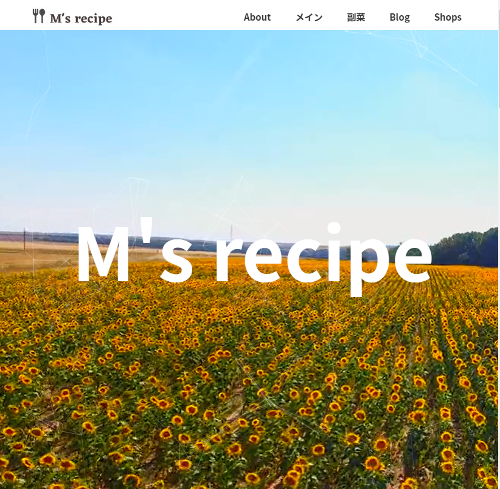
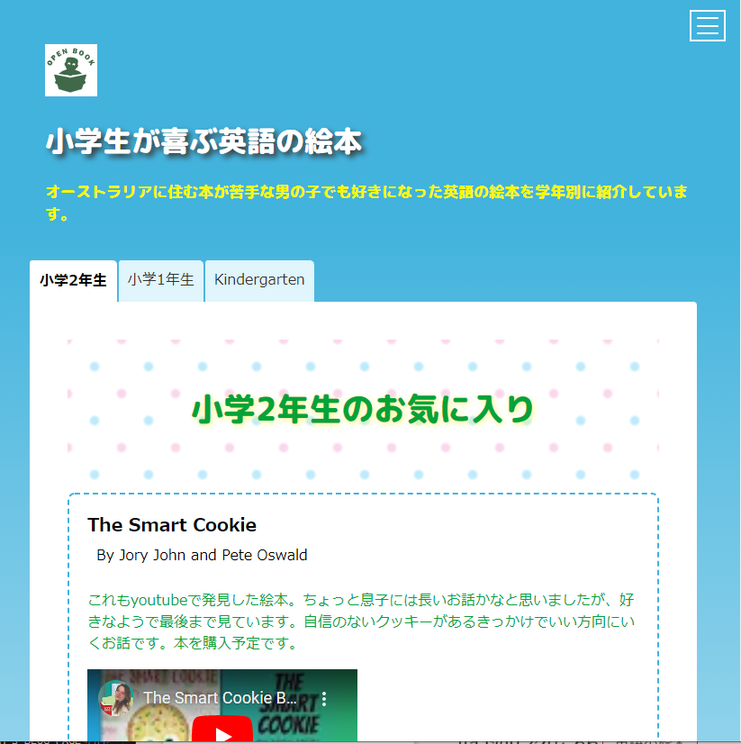
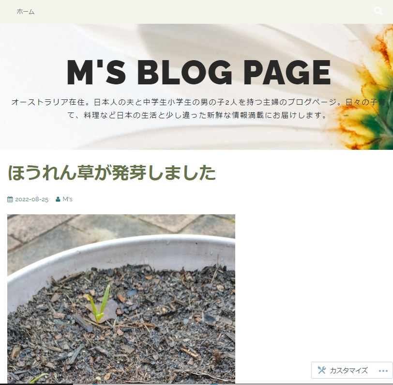

About
- 嶋本雅子
- Masako Shimamoto
- オーストラリアシドニー在住
- url: https://m-joey.github.io/portfolio/
日本人の夫と小学生中学生2人の息子を持ち、シドニー在住。
日本語教師の傍ら、プログラミングを独学で習得しウェブサイト制作に携わる。スクールに通わず、有料オンライン講座に頼らず、全て無料サイト動画を活用し、半年でHTML CSS Javascriptでウェブサイト作るに至る。
普段はいかにおいしく安くて早く作れる料理や子供の日本語と英語教育に関心を持つ。また子供の土曜校副代表や野球のクラブチームでスコア係など地域ボランティア活動でコミュニティ参加も積極的に行う。
子供が中学校2年生なのでせめて日本語で4教科(英語以外)を教えられるように教科書や動画でなど予習を欠かさない学習意欲が旺盛な40代女性で日々プログラミング学習に力を注ぐ。
Works

M's Work
- ウェブサイト制作に関するポートフォリオ。トップにスライドショー、スクロールするとトップページに戻るボタンを、WorksセクションにはGSAPを使用してアニメーションを付けて全体的に動きのあるサイト。レスポンシブ対応で画面を小さくするとトップの画面が変更される。また、メニューアイコンが出てきてクリックするとナブメニューが右から出てくる。
- HTML
- CSS
- Javascript
- レスポンシブ対応
サイトのリンクはこちら
M's WorkM's recipe
- 普段よく使うレシピをまとめたサイト。レスポンシブ対応で、画面幅が小さくなるとメニュー画面が表示され、カテゴリーごとにナビゲーションが現れる設定。独学で勉強して一番最初に制作したサイトで、数ページある大きな作品。
- HTML
- CSS
- Javascript
- レスポンシブ対応
サイトのリンクはこちら
M's recipe


小学生が喜ぶ英語の絵本
- 英語の本に興味がなかった息子が唯一好きな本を厳選して紹介したサイト。レスポンシブ対応でメニュー画面が出るほかに、学年別にタブ設定を設けるなど工夫した作品。検索エンジンに引っかかるように、google search consoleを設定済み。
- HTML
- CSS
- Javascript
- レスポンシブ対応
- SEO対策
サイトのリンクはこちら
英語の絵本M's BLOG PAGE
- 子育て料理など日本の生活と少し違うオーストラリアならではの何気ない日常を紹介しているサイト。Wordpressに興味を持ったので、無料版で制作。
- Wordpress
サイトのリンクはこちら
M's BLOG

History
- 2022.07
- デザインを含め一からウェブサイトM's recipeを制作する。
- 2022.01
- 学習サイトやYouTubeでJavascriptを学び始める
- 2021.10
- Progate ドットインストールの学習サイトからHTML CSSを学び始める
Experience
- 日本語教師
- 日本語教育能力検定試験に合格し、日本語教師勤務
- テーマパーク会社
- マーケティング、営業事務
- 日系大手メーカー
- 貿易、営業事務